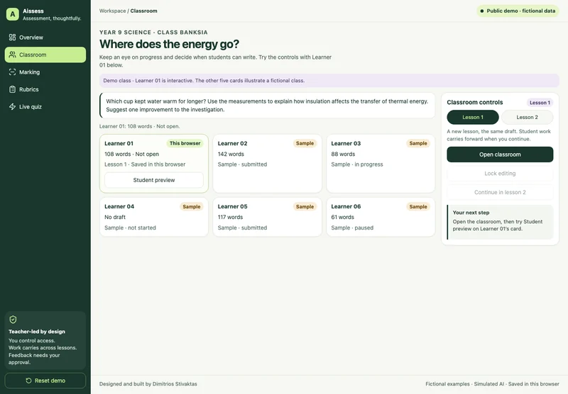

Enlarge screenshot.Source: Aissess
Open, pause and lock a classroom
The teacher opens a writing task, pauses work for instruction, resumes it or locks it. Student preview makes the effect of that decision visible.
Teacher control. The teacher chooses when writing is available. The demo illustrates the access workflow, without enforcing security across real devices.
Open the classroom, then use Student preview to see what the learner can edit.